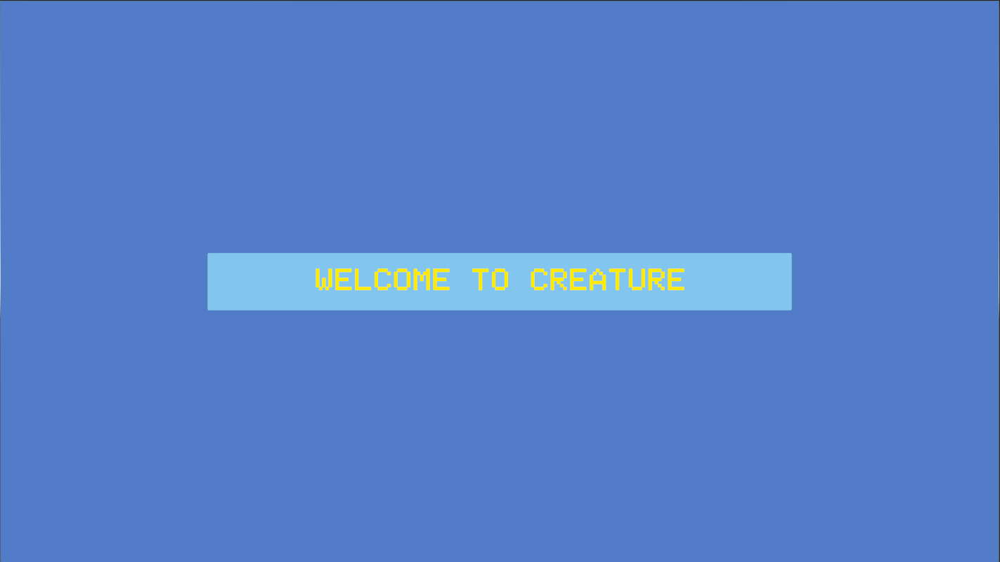
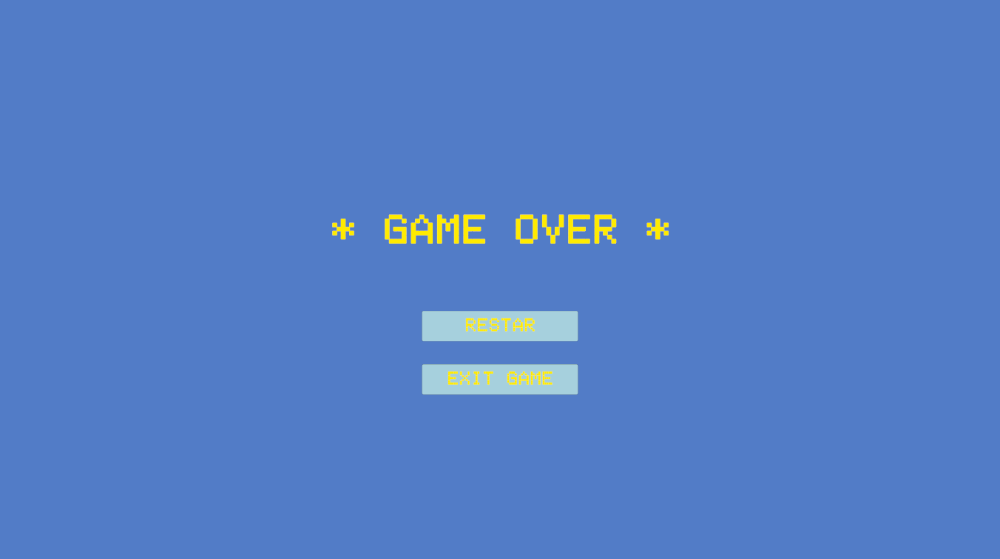
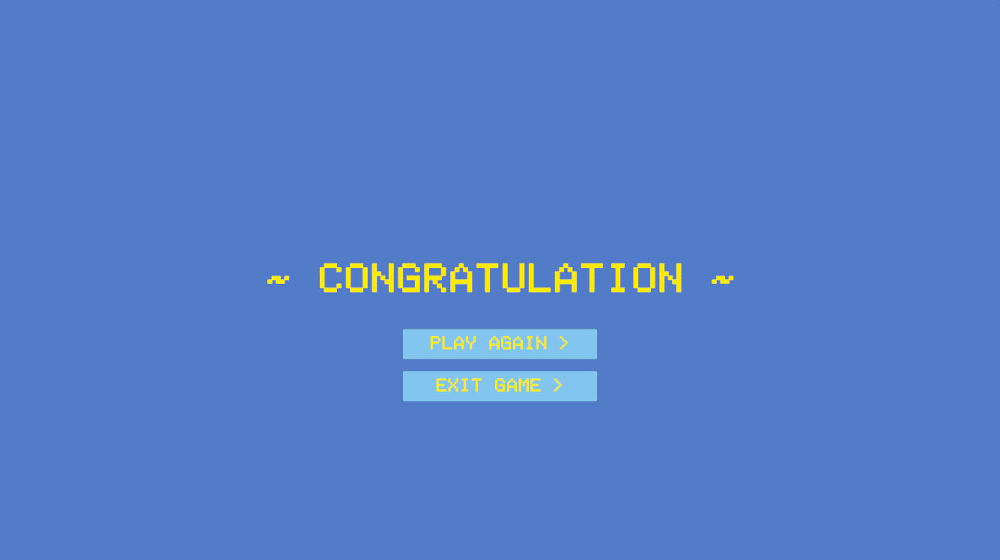

Concept : shoting and escaping
This escape game utilizes virtual environments drawn from a previous virtual world. The entire setting features highly saturated colors, creating a vivid and exaggeratedly colorful virtual realm. Within this world, the flora is bizarre in appearance and uniquely colored; the bubbles floating throughout the environment may look dreamy and harmless, but they are, in reality, hidden bombs—upon contact, they begin to glow and expand in size. The room constructed in the center of the scene features a simple architectural design, serving to demarcate the boundaries between the various levels. This title functions as a mini-game within the shooter genre, where players achieve final victory by eliminating obstacles, dodging hazards, and engaging in combat with NPCs. The total playtime for a complete playthrough is capped at ten minutes, making for a simple yet slightly intense gaming experience.

Process : Build the game sections
This game is a room-escape puzzle game. Each level features unique escape conditions and traps, requiring players to proceed by following the text hints displayed on the screen. Additionally, every stage is subject to a time limit; players must successfully escape the room within the allotted time to advance to the next level, continuing this process until they achieve final victory.
Game References


Key steps in the building the game room:
- 1.Define Levels:
- 2.Each level's details:
When defining the game levels, my initial intention was simply to create a game centered around destroying cubes. However, after completing the testing phase for this segment, I realized that the game's inherent replayability was quite low. Consequently, I began conceptualizing the content for the subsequent levels. I did not want the game to become overly difficult; thus, while the first level focused on destroying obstacles, for the second level, I sought to introduce a new mode of interaction with those obstacles—specifically, having the player evade them instead. Furthermore, the difficulty of the second level is slightly higher than the first, as the obstacles within this second environment are dynamic and mobile. In designing the third level, I introduced NPC enemies; this raised the difficulty of the level-completion conditions compared to the previous stage, thereby enhancing the overall replayability of the game.

1. First, before entering the main building, players need to reach its location. During this process, many transparent, colored bubbles will randomly appear in the environment. These bubbles are hidden touch bombs; if a player accidentally touches them, they will expand and burst.
UI system:
The UI system of the dream world game is designed to provide players with an intuitive and immersive interface for navigating the game's mechanics and features. The UI includes elements such as health bars, inventory screens, and interactive prompts that allow players to manage their resources, track their progress, and interact with the environment. The design of the UI is consistent with the overall aesthetic of the game, featuring a futuristic and organic style that complements the surreal nature of the dream world. The UI system is also designed to be responsive and adaptive, providing players with a seamless experience as they explore the various chambers and corridors of the symbiotic heart.



user testing recording
During user testing, the feedback received focused primarily on hardware integration and in-game level prompts. The hardware controls proved difficult to manipulate, requiring users to divert their attention to the physical interface—a distraction that ultimately diminished the overall gaming experience. Furthermore, the level prompts were positioned in the top-left corner of the screen; however, users found they simply did not have the time to read them while actively engaged in gameplay. To enhance the overall user experience, it is recommended that a dedicated UI screen displaying game rules be introduced prior to the start of each level.